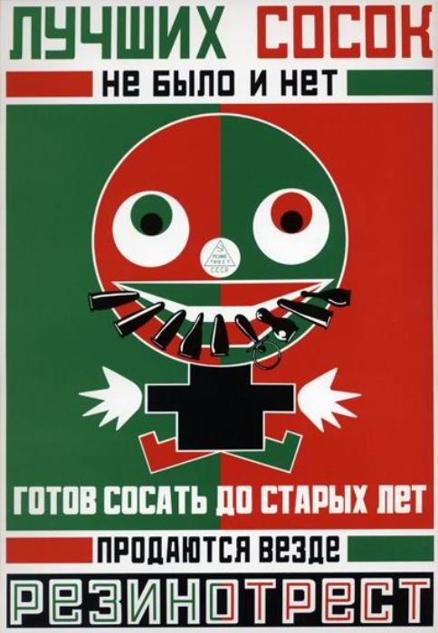
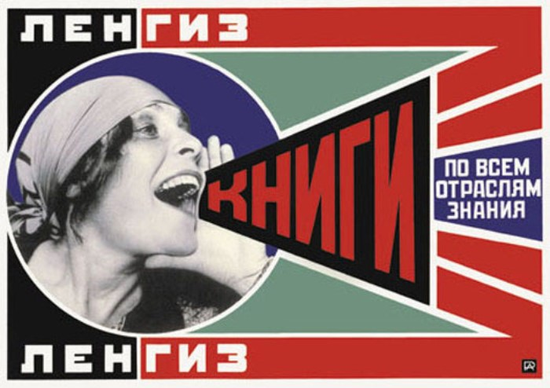

Vladimir Mayakovsky. Poster Art.

Fig. 1. This Soviet poster (1923) by artist Alexander Rodchenko
promotes pacifiers produced by State Rubber Trust.
The poster uses Mayakovsky's poem.

Fig. 2. This Soviet poster (1924) by artist Alexander Rodchenko
promotes books by the State Publishing House.
The poster depicts Lilya Brik, Mayakovsky's muse.